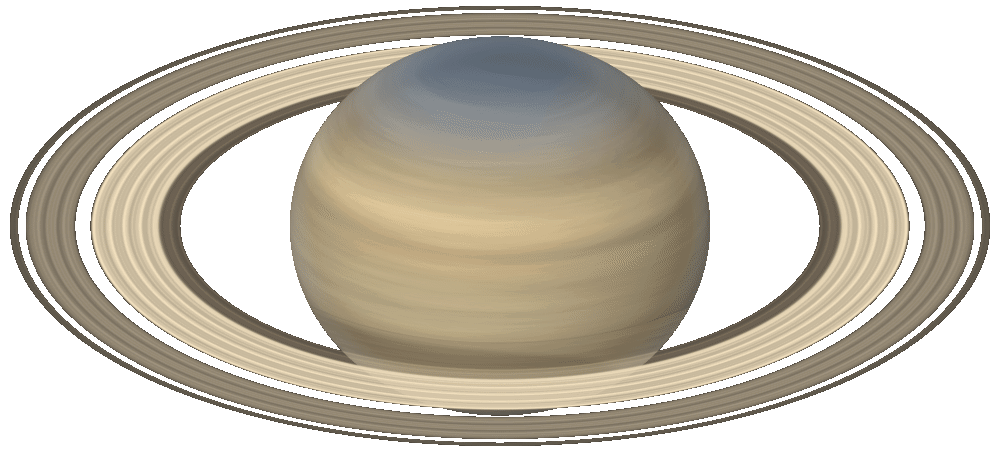

Like fellow gas giant Jupiter, Saturn is a massive ball made mostly of hydrogen and helium. Saturn is not the only planet to have rings, but none are as spectacular or as complex as Saturn's. Saturn also has dozens of moons.
From the jets of water that spray from Saturn's moon Enceladus to the methane lakes on smoggy Titan, the Saturn system is a rich source of scientific discovery and still holds many mysteries.
Namesake
The farthest planet from Earth discovered by the unaided human eye, Saturn has been known since ancient times. The planet is named for the Roman god of agriculture and wealth, who was also the father of Jupiter.
Potential for Life
Saturn's environment is not conducive to life as we know it. The temperatures, pressures, and materials that characterize this planet are most likely too extreme and volatile for organisms to adapt to.
While planet Saturn is an unlikely place for living things to take hold, the same is not true of some of its many moons. Satellites like Enceladus and Titan, home to internal oceans, could possibly support life.
Size and Distance
With an equatorial diameter of about 74,897 miles (120,500 kilometers), Saturn is 9 times wider than Earth. If Earth were the size of a nickel, Saturn would be about as big as a volleyball.
From an average distance of 886 million miles (1.4 billion kilometers), Saturn is 9.5 astronomical units away from the Sun. One astronomical unit (abbreviated as AU), is the distance from the Sun to Earth. From this distance, it takes sunlight 80 minutes to travel from the Sun to Saturn.
Orbit and Rotation
Saturn has the second-shortest day in the solar system. One day on Saturn takes only 10.7 hours (the time it takes for Saturn to rotate or spin around once), and Saturn makes a complete orbit around the Sun (a year in Saturnian time) in about 29.4 Earth years (10,756 Earth days).
Its axis is tilted by 26.73 degrees with respect to its orbit around the Sun, which is similar to Earth's 23.5-degree tilt. This means that, like Earth, Saturn experiences seasons.
Moons
Saturn is home to a vast array of intriguing and unique worlds. From the haze-shrouded surface of Titan to crater-riddled Phoebe, each of Saturn's moons tells another piece of the story surrounding the Saturn system. As of March 2025, Saturn had 274 confirmed moons in its orbit, far more than any other planet in our solar system, with other Saturnian satellites continually awaiting confirmation of their discovery and official naming by the International Astronomical Union (IAU).
Rings
Saturn's rings are thought to be pieces of comets, asteroids, or shattered moons that broke up before they reached the planet, torn apart by Saturn's powerful gravity. They are made of billions of small chunks of ice and rock coated with other materials such as dust. The ring particles mostly range from tiny, dust-sized icy grains to chunks as big as a house. A few particles are as large as mountains. The rings would look mostly white if you looked at them from the cloud tops of Saturn, and interestingly, each ring orbits at a different speed around the planet.
Saturn's ring system extends up to 175,000 miles (282,000 kilometers) from the planet, yet the vertical height is typically about 30 feet (10 meters) in the main rings. Named alphabetically in the order they were discovered, the rings are relatively close to each other, with the exception of a gap measuring 2,920 miles (4,700 kilometers) in width called the Cassini Division that separates Rings A and B. The main rings are A, B, and C. Rings D, E, F, and G are fainter and more recently discovered.
Starting at Saturn and moving outward, there is the D ring, C ring, B ring, Cassini Division, A ring, F ring, G ring, and finally, the E ring. Much farther out, there is the very faint Phoebe ring in the orbit of Saturn's moon Phoebe.
Formation
Saturn took shape when the rest of the solar system formed about 4.5 billion years ago when gravity pulled swirling gas and dust in to become this gas giant. About 4 billion years ago, Saturn settled into its current position in the outer solar system, where it is the sixth planet from the Sun. Like Jupiter, Saturn is mostly made of hydrogen and helium, the same two main components that make up the Sun.
Structure
Like Jupiter, Saturn is made mostly of hydrogen and helium. At Saturn's center is a dense core of metals like iron and nickel surrounded by rocky material and other compounds solidified by intense pressure and heat. It is enveloped by liquid metallic hydrogen inside a layer of liquid hydrogen –similar to Jupiter's core but considerably smaller.
It's hard to imagine, but Saturn is the only planet in our solar system with an average density that is less than water. The giant gas planet could float in a bathtub if such a colossal thing existed.
Surface
As a gas giant, Saturn doesn’t have a true surface. The planet is mostly swirling gases and liquids deeper down. While a spacecraft would have nowhere to land on Saturn, it wouldn’t be able to fly through unscathed either. The extreme pressures and temperatures deep inside the planet would crush, melt, and vaporize any spacecraft trying to fly into the planet.
Atmosphere
Saturn is blanketed with clouds that appear as faint stripes, jet streams, and storms. The planet is many different shades of yellow, brown, and gray.
Winds in the upper atmosphere reach 1,600 feet per second (500 meters per second) in the equatorial region. In contrast, the strongest hurricane-force winds on Earth top out at about 360 feet per second (110 meters per second). And the pressure – the same kind you feel when you dive deep underwater – is so powerful it squeezes gas into a liquid.
Saturn's north pole has an interesting atmospheric feature – a six-sided jet stream. This hexagon-shaped pattern was first noticed in images taken by the twin Voyager spacecraft in the early 80s. Later, it was more closely observed by the Cassini spacecraft. Spanning about 20,000 miles (30,000 kilometers) across, the hexagon is a wavy jet stream of 200-mile-per-hour winds (about 322 kilometers per hour) with a massive, rotating storm at the center.
For decades, the north-pole hexagon had no counterpart at Saturn’s south pole. But recent observations with NASA’s Hubble Space Telescope revealed a giant, evolving, 10-sided — or decagonal — atmospheric wave encircling Saturn's south pole, according to a research study published in September 2026. This discovery, gleaned from observations dating back to 2023, marked the first time a large, regular-sided jet pattern has been observed in the planet's southern hemisphere.
Magnetosphere
Saturn's magnetic field is smaller than Jupiter's but still 578 times as powerful as Earth's. Saturn, the rings, and many of the satellites lie totally within Saturn's enormous magnetosphere, the region of space in which the behavior of electrically charged particles is influenced more by Saturn's magnetic field than by the solar wind.
Aurorae occur when charged particles spiral into a planet's atmosphere along magnetic field lines. On Earth, these charged particles come from the solar wind. Cassini showed that at least some of Saturn's aurorae are like Jupiter's and are largely unaffected by the solar wind. Instead, these aurorae are caused by a combination of particles ejected from Saturn's moons and Saturn's magnetic field's rapid rotation rate. But these "non-solar-originating" aurorae are not completely understood yet.